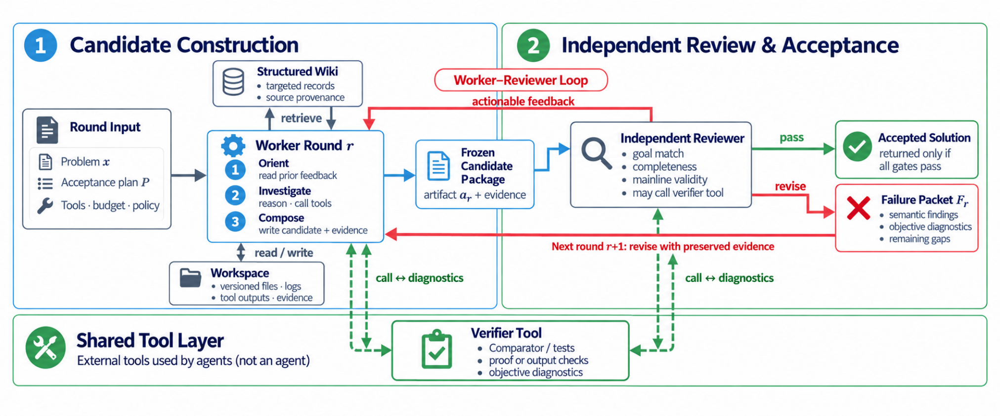
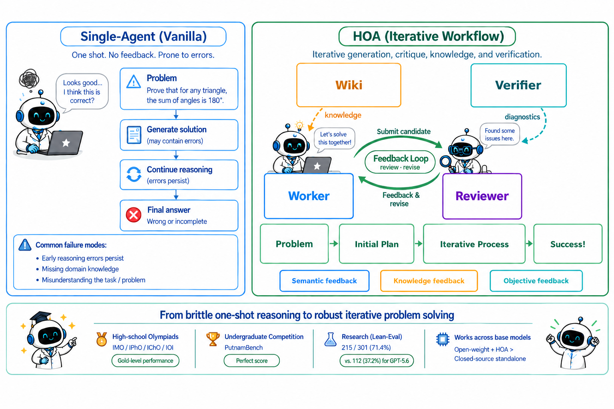

Generates Lean proofs verified by Comparator and the Lean kernel, evaluated on PutnamBench and Lean-Eval, and formalizes physics problems as Lean statements.
Abstract
Large language model (LLM) agents are rapidly improving on long-horizon scientific and olympiad tasks. Recent systems have produced a Lean-formalized resolution of the Navier–Stokes problem and autonomous solutions to four open questions in the Erdős Conjectures database. Yet neither system releases both its underlying model and complete inference stack. More broadly, a single agent session remains brittle on difficult problems: early errors can propagate, missing domain knowledge can stall progress, and apparent success can mask a misinterpretation or weakening of the original task. We introduce HOA (Humanize Olympiads Agent), an open, flow-level framework that coordinates multiple agent sessions through three complementary feedback channels. First, an independent reviewer evaluates each candidate and provides actionable feedback. Second, a structured wiki supplies task-specific knowledge that may be missing or unreliable in model pretraining. Third, a verifier checks generated Lean proofs against trusted challenge statements. With GPT-5.6 Sol, HOA achieves perfect scores on the IMO, IPhO, and IOI 2026, near-full marks on the IChO 2026 problem set, and solves all 672 problems (100%) on PutnamBench. On the Lean-Eval leaderboard, HOA ranks first, solving 251 of 304 problems (82.6%). We further evaluate HOA with open models. Using Kimi-K3, HOA achieves full scores on the IMO, IPhO, and IOI, and a gold-level score of 97.1% on the IChO. These results closely match the closed-source GPT-5.6 Sol + /Goal baseline on the IMO and IPhO, while exceeding it on the IChO and IOI, demonstrating that systematic feedback can help bridge substantial differences in base-model capability.
Problem
Single LLM agent sessions are brittle on hard olympiad and research-level problems. Early errors propagate, domain knowledge may be missing, and agents can misread or weaken the task. Prior strong systems do not release both their model and full inference stack.
Approach
HOA is an open flow-level framework built on Humanize. It coordinates a worker, an independent reviewer, a structured wiki of provenance-tracked knowledge, and a task-specific verifier in an iterative repair loop. For mathematics and physics, generated Lean proofs are checked against trusted statements with Comparator and the Lean kernel, and a formalization agent turns physics problems into typed Lean statements. Programming tasks keep their native execution tests.

Figure 2: Overview of HOA. The worker receives the problem, acceptance plan, tools, budget, and prior feedback, and may retrieve provenance-bearing wiki records while building a versioned candidate. An independent reviewer inspects the frozen candidate and returns semantic findings. The worker and reviewer may both call the external verifier for objective checks. If any requirement fails, the find
Results
With GPT-5.6 Sol, HOA solves all 672 PutnamBench problems and ranks first on Lean-Eval with 251/304. It also reaches full or near-full scores on IMO, IPhO, IChO and IOI 2026. With the open model Kimi-K3, HOA matches or exceeds the closed /Goal baseline on these olympiads.

Figure 1: HOA replaces a brittle one-shot workflow with iterative review, knowledge retrieval, and verification. The bottom row summarizes results from high-school olympiads to research-level formal mathematics.